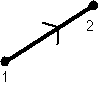

Rayon lumineux unique

Définition
Il est défini par les points 1 et 2.
Le rayon peut être ajouté:
- en cliquant sur le bouton de la barre d'outil ayant la forme ci-dessus,
puis en faisant un clic simple pour saisir le premier point, puis en faisant
un clic simple pour saisir le second (ne pas maintenir le bouton de la
souris enfoncé entre les deux points)
OU
- menu "Ajouter" puis "Source" puis "Rayon unique".
Options
On peut imposer
-l'épaisseur du trait représentant le rayon à l'écran
- la couleur du rayon; ce n'est pas simplement la couleur représentée
à l'écran, mais aussi la couleur qui détermine l'indice
de réfraction pour les milieux réfractants dispersifs; un rayon
de lumière blanche est composé de trois rayons rouge, vert
et bleu.
- le nombre maximal de rayons enfants; lorsque le rayon arrive sur
un dioptre, il donne en général naissance à un rayon
réfléchi et à un rayon transmis; le rayon réfléchi
est appelé ici "rayon enfant" (sauf dans le cas de la lame semi-réfléchissante idéale);
par défaut, le nombre maximal d'enfants est de 10. Remarque: un enfant
peut avoir lui aussi des enfants, mais son nombre maximal d'enfant est celui
de son rayon parent diminué de 1.
- le fait qu'il existe ou pas un rayon réfléchi en plus du
rayon réfracté est une propriété de chaque élément
réfractant
- si il n'y a pas de réfraction (angle d'indicence plus grand que
l'angle limite), le rayon réfléchi est un rayon simple, pas
un enfant
- on peut demander à ce que les prolongements des différents
segments qui composent le trajet du rayon soient tracés en pointillés,
vers l'avant ou vers l'arrière; il suffit de préciser la liste
des segments concernés (segments numérotés dans l'ordre
de propagation du rayon); ainsi, si le cheminement du rayon est le suivant:

et qu'on demande le prolongement (1,2,4) vers l'avant et (3,4) vers l'arrière,
alors on obtient:

Ces propriétés peuvent être rendues accessibles:
- à la construction du rayon si on passe par le menu "Ajouter"
- à tout instant en cliquant sur le bouton "Propriétés"
de la barre d'outil, puis en cliquant sur un des cercles bleus qui apparaissent
sur l'élément dont on veut obtenir les propriétés;
ne pas oublier à la fin de cliquer sur le bouton "Fin prop." de
la barre d'outil pour quitter le mode propriétés.
Retour à la page
d'accueil